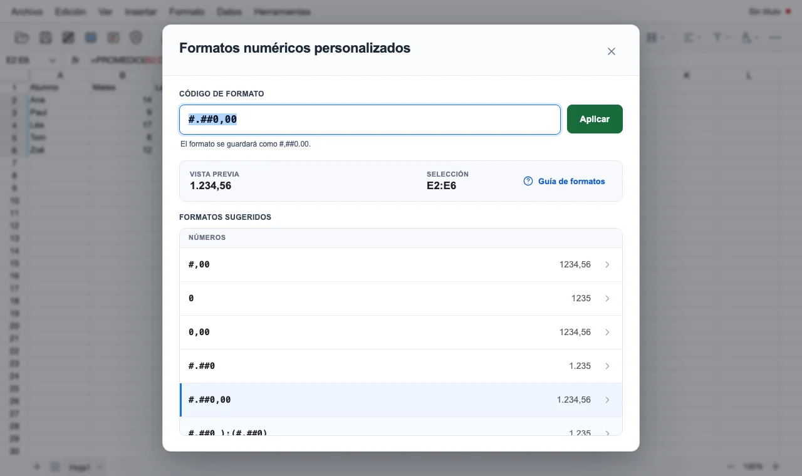

Formatos de número
Un formato cambia la visualización de un número, no su valor: los cálculos conservan todos los decimales.
Elegir un formato
Formato › Número, o la lista Automático de la barra de botones.
| Formato | Ejemplo |
|---|---|
| Automático | 1200,09 |
| Texto | 1200,09, alineado a la izquierda; la entrada queda como texto |
| Número | 1200,09 |
| Porcentaje | 120009,00%; 0,25 pasa a ser 25,00% |
| Científico | 1,20E+03 |
| Contabilidad | (1.200,09) € |
| Moneda | 1.200,09 € |
| Fecha, Hora, Fecha Hora | para las fechas: 29/11/2017, 3:00 PM, 15:00… |
El símbolo monetario es el del idioma de la interfaz.
| Botón | Efecto |
|---|---|
| porcentaje | |
| un decimal menos | |
| un decimal más |
Estos botones valen también para los números de una lista. Para redondear el propio valor, usar REDONDEAR.
Formato personalizado
Formato › Número › Formato numérico personalizado…: elegir un formato sugerido, o escribir un código. La vista previa muestra el resultado; Guía de formatos recuerda los signos; Aplicar lo da a la selección.

| Signo | Función | Código | 1234,5 se muestra |
|---|---|---|---|
0 | una cifra, incluido el cero | 0,00 | 1234,50 |
# | una cifra si es útil | #,## | 1234,5 |
. | agrupa los millares | #.##0 | 1.235 |
% | porcentaje | 0% | 123450% |
"texto" | un texto, una unidad | 0,0 "m" | 1234,5 m |
E+00 | notación científica | 0,00E+00 | 1,23E+03 |
; | formatos de positivos, negativos, ceros, textos | 0;-0;"nulo" | 1235 |
[Red] | color | 0;[Red]-0 | negativos en rojo |
El código se escribe con los separadores del idioma; la ventana indica la forma en que se guarda (#,##0.00), la misma que en Excel.
Fechas y horas
| Código | 29 de agosto de 2026, 14:30 |
|---|---|
dd/MM/yyyy | 29/08/2026 |
d mmm yyyy | 29 Aug 2026 |
dddd d mmmm yyyy | Saturday 29 August 2026 |
hh:mm | 14:30 |
dd/MM/yyyy hh:mm | 29/08/2026 14:30 |
Los nombres de meses y días se muestran en inglés.
Unidades
En Unidades, formatos como 0,00 "V", 0,00 "Ω", 0,00 "mm": la celda sigue siendo un número, con el que se calcula.